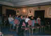
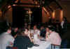
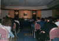

Workshop on Spatio-Temporal Database Management

Edinburgh, Scotland, 10-11 September 1999
co-located with VLDB'99 and supported by the Chorochronos network
PHOTOS
Workshop on Spatio-Temporal Database Management |
|
Edinburgh, Scotland, 10-11 September 1999 |
co-located with VLDB'99 and supported by the Chorochronos network |
PHOTOS |
| During the proceedings |  |
And during the visit to the Whisky heritage center |  |
| The end of a presentation | The panelists | ||
| and the panel disussion... |  |